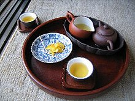
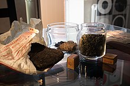
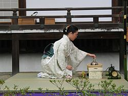
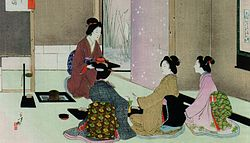
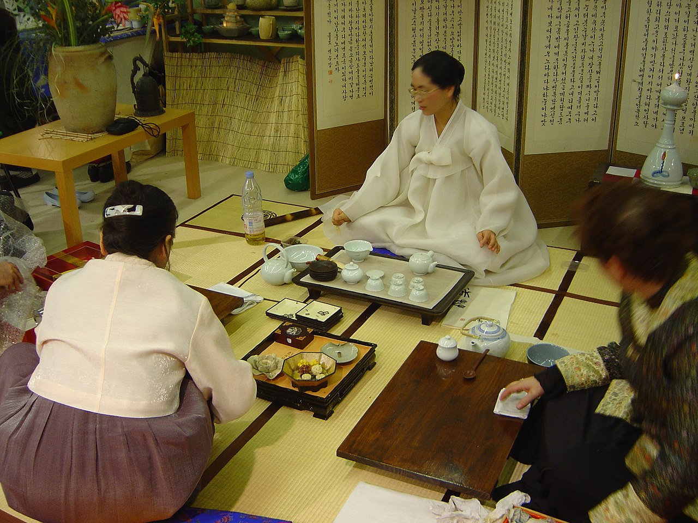
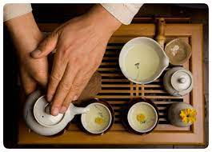

|
Китайская чайная культура (кит. трад. 中國茶文化, упр. 中国茶文化, пиньинь zhōngguó chá wénhuà, палл. чжунго ча вэньхуа) — способы приготовления чая, используемая посуда и приборы, а также события, служащие поводом для чаепития в Китае. |
 |  |
|  |
Японская Чайная церемония (яп. 茶の湯 тя-но ю), «путь чая», «искусство чая» (茶道 садо:, тядо:) — специфическая ритуализованная форма совместного приёма порошкового зелёного чая (маття), созданная в средние века в Японии и по настоящее время культивируемая в этой стране. Появившись первоначально как одна из форм практики медитации монахов-буддистов, стала неотъемлемым элементом японской культуры, тесно связана со многими другими культурными явлениями. |
 |
|  |  |
Корейская чайная церемония (кор. 다례?, 茶禮? [ta.ɾje]) — это традиционная форма чайной церемонии, практикуемая в Корее уже более тысячи лет. Главным элементом корейской чайной церемонии является непринуждённость и естественность наслаждения чаем в официальной обстановке. В настоящее время чайная церемония в Корее является способом найти расслабление и гармонию в быстро развивающейся новой корейской культуре, продолжая давние традиции. |